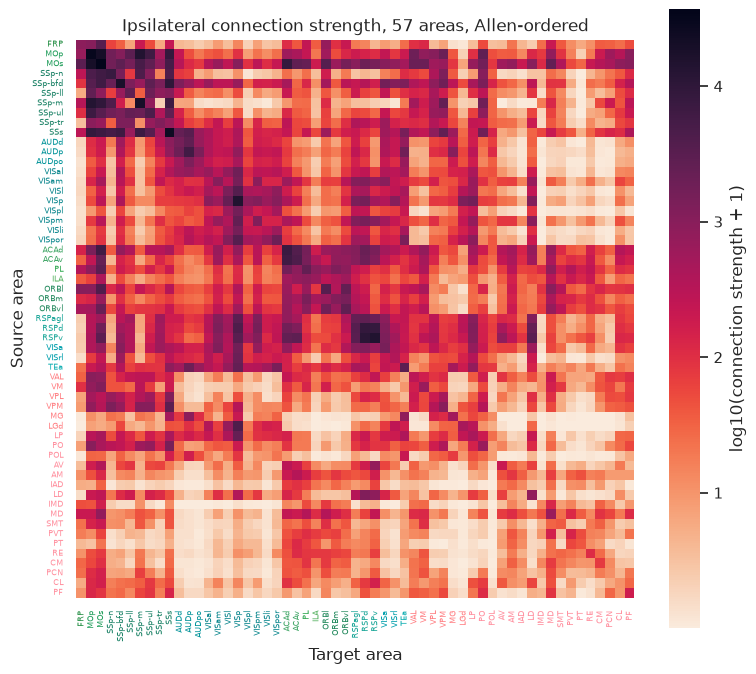
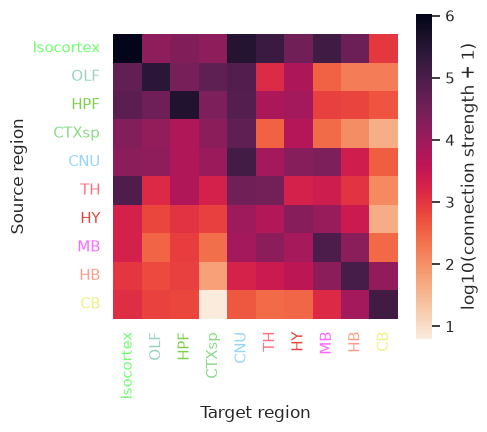

Mesoscale mouse connectivity and the cortico-thalamic hierarchy
This loads two related datasets:
mesoscale.load(): the Oh et al. (2014) / Knox et al. (2018) regularized-regression mesoscale connectivity matrix, regionalized onto 291 Allen summary structures, with per-structure volumes attached so it can be reaggregated onto any coarser parcellation.mesoscale.load_hierarchy(): the Harris et al. (2019) precomputed cortico-thalamic hierarchy scores for 61 cortical and thalamic areas.
References:
Oh et al., “A mesoscale connectome of the mouse brain,” Nature, 508, 207-214 (2014). doi: 10.1038/nature13186
Knox et al., “High-resolution data-driven model of the mouse connectome,” Network Neuroscience, 3, 217-236 (2018). doi: 10.1162/netn_a_00066
Harris et al., “Hierarchical organization of cortical and thalamic connectivity,” Nature, 575, 195-202 (2019). doi: 10.1038/s41586-019-1716-z
[1]:
%matplotlib inline
import numpy as np
import matplotlib.pyplot as plt
import seaborn as sns
from iblatlas.connectivity import mesoscale
from iblatlas.regions import BrainRegions
sns.set_theme(context='notebook')
connectivity = mesoscale.load()
hierarchy = mesoscale.load_hierarchy()
connectivity.head()
Out[1]:
| source_structure_id | hemisphere | target_structure_id | value | metric | source_acronym | target_acronym | source_volume_mm3 | target_volume_mm3 | |
|---|---|---|---|---|---|---|---|---|---|
| 0 | 184 | contra | 1 | 0.519956 | connection_strength | FRP | TMv | 0.243055 | 0.027055 |
| 1 | 184 | contra | 100 | 0.611588 | connection_strength | FRP | IPN | 0.243055 | 0.082914 |
| 2 | 184 | contra | 1002 | 1.169252 | connection_strength | FRP | AUDp | 0.243055 | 0.537547 |
| 3 | 184 | contra | 1004 | 0.213878 | connection_strength | FRP | PMv | 0.243055 | 0.048922 |
| 4 | 184 | contra | 1007 | 0.788386 | connection_strength | FRP | SIM | 0.243055 | 1.424016 |
Connectivity heatmap
Ipsilateral connection_strength, restricted to the cortical and thalamic areas covered by the hierarchy table, ordered by the Allen CCF ontology order, with tick labels coloured by Allen CCF region colour.
[2]:
br = BrainRegions()
areas = hierarchy['area'].unique()
ipsi_strength = connectivity[
(connectivity['metric'] == 'connection_strength')
& (connectivity['hemisphere'] == 'ipsi')
& connectivity['source_acronym'].isin(areas)
& connectivity['target_acronym'].isin(areas)
]
matrix = ipsi_strength.pivot(index='source_acronym', columns='target_acronym', values='value')
common = matrix.index.intersection(matrix.columns)
matrix = matrix.loc[common, common]
order = dict(zip(*[br.get(br.acronym2id(matrix.index.to_numpy()))[k] for k in ('acronym', 'order')]))
ordered_areas = sorted(matrix.index, key=lambda a: order[a])
matrix = matrix.loc[ordered_areas, ordered_areas]
info = br.get(br.acronym2id(np.array(ordered_areas)))
hexcolors = dict(zip(info.acronym, (f'#{r:02x}{g:02x}{b:02x}' for r, g, b in info.rgb)))
fig, ax = plt.subplots(figsize=(8, 7))
sns.heatmap(np.log10(matrix.to_numpy(dtype=float) + 1), xticklabels=ordered_areas, yticklabels=ordered_areas,
cmap='rocket_r', square=True, cbar_kws={'label': 'log10(connection strength + 1)'}, ax=ax)
ax.set_xlabel('Target area')
ax.set_ylabel('Source area')
ax.set_title(f'Ipsilateral connection strength, {len(ordered_areas)} areas, Allen-ordered')
for tick_label in list(ax.get_xticklabels()) + list(ax.get_yticklabels()):
tick_label.set_color(hexcolors[tick_label.get_text()])
tick_label.set_fontsize(6)
fig.tight_layout()

Reaggregating onto a coarser parcellation
connection_strength is additive: summing it within groups on both the source and target side gives the exact value for a coarser parcellation, as long as that parcellation partitions the 291 summary structures with no overlap or gaps – true of any Allen ontology grouping. Here we reaggregate onto the 10 Cosmos regions and plot the result, ordered and coloured by their Allen CCF region colour.
[3]:
strength = connectivity[connectivity['metric'] == 'connection_strength'].copy()
strength['source_cosmos'] = br.id2acronym(br.id2id(strength['source_structure_id'].to_numpy(), mapping='Cosmos'))
strength['target_cosmos'] = br.id2acronym(br.id2id(strength['target_structure_id'].to_numpy(), mapping='Cosmos'))
cosmos = (
strength[strength['hemisphere'] == 'ipsi']
.groupby(['source_cosmos', 'target_cosmos'])['value'].sum()
.reset_index()
.pivot(index='source_cosmos', columns='target_cosmos', values='value')
)
order = dict(zip(*[br.get(br.acronym2id(cosmos.index.to_numpy()))[k] for k in ('acronym', 'order')]))
ordered = sorted(cosmos.index, key=lambda a: order[a])
cosmos = cosmos.loc[ordered, ordered]
info = br.get(br.acronym2id(np.array(ordered)))
hexcolors = dict(zip(info.acronym, (f'#{r:02x}{g:02x}{b:02x}' for r, g, b in info.rgb)))
fig, ax = plt.subplots(figsize=(5, 4.5))
sns.heatmap(np.log10(cosmos.to_numpy(dtype=float) + 1), xticklabels=ordered, yticklabels=ordered,
cmap='rocket_r', square=True, cbar_kws={'label': 'log10(connection strength + 1)'}, ax=ax)
ax.set_xlabel('Target region')
ax.set_ylabel('Source region')
for tick_label in list(ax.get_xticklabels()) + list(ax.get_yticklabels()):
tick_label.set_color(hexcolors[tick_label.get_text()])
fig.tight_layout()
